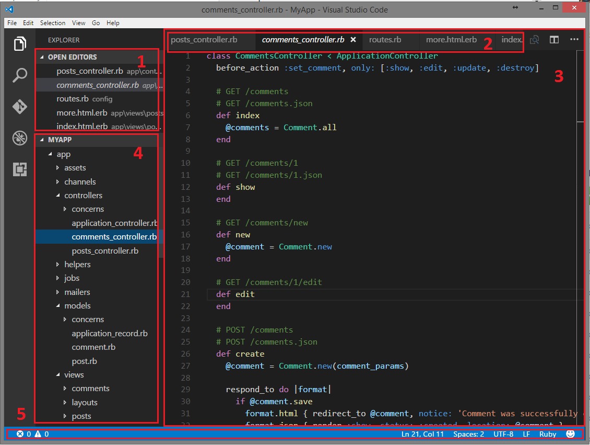
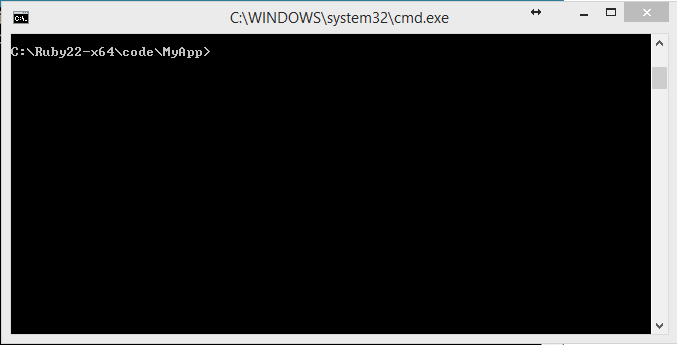
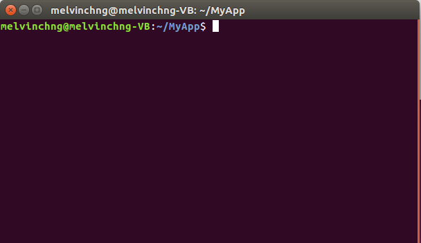
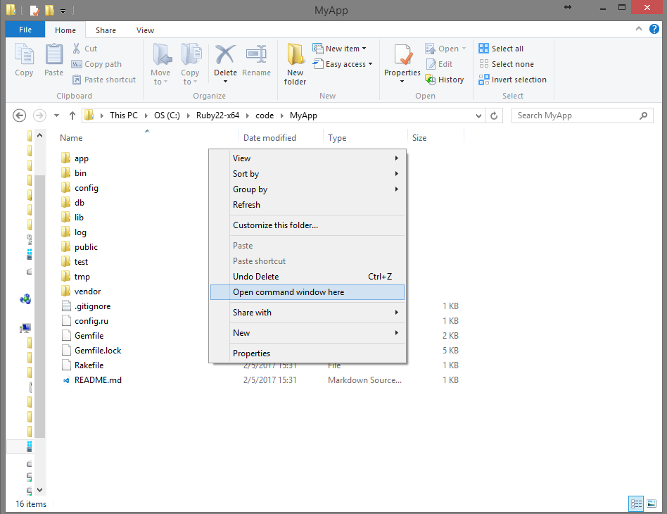
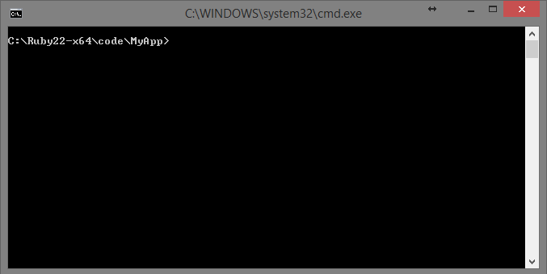

Last modified: Thu Aug 16 2018 22:49:00 GMT+0800 (Malay Peninsula Standard Time)
Technology Introduction
Introduction
In this section, each technology will be discussed in a great length. I will provide as much information as possible to get you become a geek among your non-tech friends. You should also make use of Google if you would like to learn more about a specific piece of technology. The discussion below will get you started on knowing some technical information that I am going to use in this tutorial. There will be more discussion and information when it comes to using specific technology.
Do not worry about getting and installing the technology discuss in this section as there will be a section dedicated to the installation.
Note: Some of the contents, if stated, in this section are directly and indirectly obtained from highly reputable Internet source. There is no point for me to rewrite their content in my own words.
Visual Studio Code
Visual Studio Code is a text editor. Figure below shows the interface of Visual Studio Code.

Figure: Visual Studio Code
A text editor is a program that allow you to edit any form of text file. It is an advance version of Notepad (on Windows OS) or text editor (on Mac OS) that offers a lot more features. Most of the code editor, including Visual Studio Code, is able to detect the programming language that you are using and color the syntax (reserved wording) according. Visual Studio Code will be the preferred text editor for this tutorial.
By comparison, Microsoft Word is a program that allows you to edit a Word document while Visual Studio Code is an text editor that allow you to edit text file.
Figure below shows a folder with your program folder opened in Visual Studio Code.

Figure: Visual Studio Code with program folder opened
In the text editor, we can see that it is partitioned into a few sections. The purpose and explanation of each sections, labelled with numbers from the figure above, are discussed below.
- A list of files that are currently opened. The exact same files can be also found at 2.
- A list of files that are currently opened. The exact same files can be also found at 1.
- The content of the selected file that is opened. Different colours are used to show the syntax.
- The file directory of your project. A project usually contains (a lot of) folders and files.
- Information about the files: programming language, the current line number and column that your cursor is at, etc
HTML, CSS, Markdown
HTML (Markup Language), CSS (Style Sheet Language), and Markdown (Light Weight Markup Language) are three major languages that we are going to use throughout this entire tutorial (they are not considered as programming languages). A website usually consists of HTML and CSS (and more components). Other than the three languages mentioned, a few other languages will also be discussed along the way.
The languages mentioned above share the concept as human languages. Depending on the purpose of the program, a program usually consists of one or more languages. As a comparison to human world, different people may speak different languages: English, Mandarin, Malay, Japanese, etc.
Do not worry if anything that discuss below does not make sense to you. At the end of the day, your main goal is to gain some knowledge from here.
HTML
Note: Information below is adapted from W3School.
HTML is the standard markup language for creating Web pages. A HTML web pages usually ends with the extension .html.
- HTML stands for Hyper Text Markup Language
- HTML describes the structure of Web pages using markup
- HTML elements are the building blocks of HTML pages
- HTML elements are represented by tags
- HTML tags label pieces of content such as "heading", "paragraph", "table", and so on
- Browsers do not display the HTML tags, but use them to render the content of the page
A code snippet shows a basic HTML code.
<!DOCTYPE html>
<html>
<head>
<title>Page Title</title>
</head>
<body>
<h1>My First Heading</h1>
<p>My first paragraph.</p>
</body>
</html>
The explanation for code snippet above is explained below.
- The
<!DOCTYPE html>declaration defines this document to be HTML5 - The
<html>element is the root element of an HTML page - The
<head>element contains meta information about the document - The
<title>element specifies a title for the document - The
<body>element contains the visible page content - The
<h1>element defines a large heading - The
<p>element defines a paragraph
HTML Tags are element names surrounded by angle brackets:
<tagname>content goes here...</tagname>
HTML tags normally come in pairs like <p> and </p>
- The first tag in a pair is the start tag, the second tag is the end tag
- The end tag is written like the start tag, but with a forward slash inserted before the tag name
- The start tag is also called the opening tag, and the end tag the closing tag.
CSS
CSS is a language that describes the style of an HTML document. It describes how HTML elements should be displayed. The extension of CSS stylesheet usually ends with the extension .css.
Note: Information below is adapted from W3School.
CSS is a language that describes the style of an HTML document. CSS describes how HTML elements should be displayed.
Below is a code snippet of CSS stylesheet.
body {
background-color: lightblue;
}
h1 {
color: white;
text-align: center;
}
p {
font-family: verdana;
font-size: 20px;
}
Markdown
Note: Information below is adapted from markdowntutorial.com.
Markdown is a way to write content for the web. It is written in what nerds like to call "plaintext", which is exactly the sort of text you are used to writing and seeing. Plaintext is just the regular alphabet, with a few familiar symbols, like asterisks ( * ) and backticks ( ` ).
Unlike cumbersome word processing applications, text written in Markdown can be easily shared between computers, mobile phones, and people. It’s quickly becoming the writing standard for academics, scientists, writers, and many more. Websites like GitHub and Reddit use Markdown to style their comments.
Formatting text in Markdown has a very gentle learning curve. It does not do anything fancy like change the font size, color, or type. All you have control over is the display of the text—stuff like making things bold, creating headers, and organizing lists.
This is one of the best Markdown Cheat Sheet in my opinion. I always refer to this cheat sheet when I need some references.
Terminal
A terminal or console is a place where you can execute commands directly. Some tasks can be completed quicker in terminal compared to graphical interface (navigate around menus and windows). Also, many commands and scripts can be used in terminal than graphical interface.
In Windows OS, terminal is known as Command Prompt while Ubuntu Linux and MacOS has it as Terminal and Terminal Window. By default, all the terminal that you open are pointing to the root directly. For example, both figures below shows root directory of my Web Application MyApp; First figure shows the terminal window in Windows OS while second figure shows the terminal window in Ubuntu Linux OS.

Figure: Root directory of my Web Application in Windows OS.
 Figure: Root directory of my Web Application in Ubuntu Linux OS.
All the examples in the tutorial will be shown on Windows OS. If you are using Ubuntu Linux and MacOS, I assume you know how to navigate in terminal window.
You can always choose to open a terminal windows that has your application as the root directory. Go to the application folder of your application and hold Shift + Right Click at the blank area. You will see the option Open command window here. Click it and you will see a terminal window that has the root directory of your Web Application. Figure below shows the operation.
Note: If you using on Linux OS, you will need to install custom packages to have this feature. For MacOS user, you can turn on this feature in your system preferences.

Figure: Open a Terminal Window in Windows using Shift + Right Click.
Now, a terminal window, as shown in Figure, is opened and has the root directory of your Web Application.

Figure: Terminal Window with Root Directory of my Web Application
Ruby on Rails, Jekyll
Ruby on Rails, also known as RoR, is an open source (source code are available for free) framework (basic structure of a thing, eg: Web Development files structure) for Web development in Ruby (programming language). It is super powerful as a Web Application can be done rapidly with the available libraries. After you are done with this tutorial and would like to jump into more Web Development, if you are interested, you can take a look at my Ruby on Rails Tutorial that I wrote for people with some programming background.
So what exactly is Jekyll? Jekyll is a simple site generator (it generate the specific code given that you follow certain rules) that created using Ruby (programming language). It can be installed as a Gem (Ruby libraries, a package that consists of certain code, is known as Gem) It takes in Markdown (explained in the section earlier) and generate a HTML files for Web by using the HTML templates. We have to make sure that our files that we created follow a set of rules and structure.
One of the top advantages of using Jekyll is the website is static and requires less resources (processing power, etc) This leads to Jekyll website is able to load rapidly on your device, leading to one of the top reason why people choose Jekyll. Jekyll is also the technology that we are going to discuss and implement in this tutorial.
Git, Github
Git is a version control (similar to Google Docs, but better, where you can keep track of the changes made by different people at different time) system that keep track of the changes in your computer files and you may work together with multiple people. Although it is designed for software development, you can still use it to keep track of your personal files.
Github is one of the online project hosting that use Git. This is also the services that we are going to host our Website, known as Github pages that uses Jekyll, at zero cost (no credit card required, no referral required, etc).
Note: Github is one of the website that is built by using Ruby on Rails.
GitBook
The legacy GitBook is both an online platform for writing and hosting documentation, and an open source book format and toolchain.
Hundreds of thousands of users use GitBook to write documentation (library, API, tools, etc.), or knowledge bases (like this F.A.Q.). People also use GitBook to publish technical books, teaching material, and many other things.
The Gitbook that will be discussed in the tutorial is known as legacy (v3.2.3, last version before v4) Gitbook as the company launched a new version of Gitbook (v4) in mid 2018. The new Gitbook (v4) is no longer open source and required you to pay for the services (there is still a free tier). Gitbook v4+ no longer work offline and requires you to use their online platform.
The main advantage of legacy Gitbook is you are able to use the template generator they created without using their online platform. This means that you are able to write anywhere you want without being tied yourself to the connected world (Internet). The code that legacy Gitbook generated can be used at any web hosting services as it will be in HTML coe.
Summary
To sum up, this tutorial will use Jekyll for static page generator. The code generated by the static page generator will be in the form of HTML and CSS. Then, we will host our website at Github. Template generator that generated by Gitbook will be hosted on Github too.